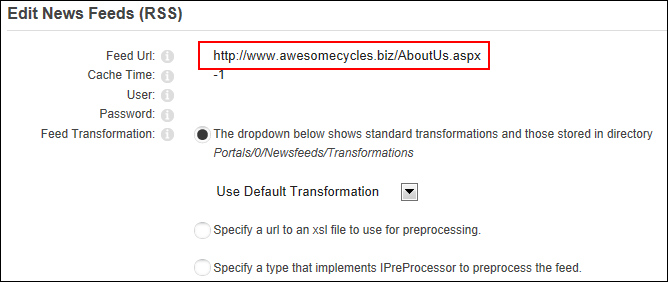
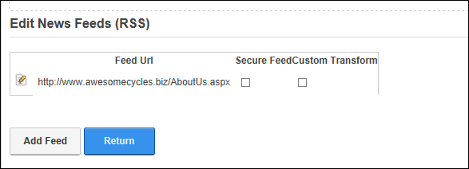

Adding News Feeds from Syndicated Modules
How to add news feeds from syndicated modules on your website using the News Feeds (RSS) module.
Prerequisite. Syndication must be enabled for the required module. See "Configuring Basic Page Settings for Modules"
- Go to a syndicated module. In this example an Announcements module is used.
- Select
 Manage >
Manage >  Syndicate from the module actions menu.
Syndicate from the module actions menu.

- This displays the XML code for the module content in a new Web browser. Note: You may need to allow pop-ups to view the code.
- Copy the URL that is displayed in the Address bar of the Web browser and paste it to your clipboard.

- Click the Back button on the Web browser to return to the site and then go to a News Feed (RSS) module.
- Select
 Edit >
Edit >  Edit Newsfeeds from the module actions menu.
Edit Newsfeeds from the module actions menu.
- Click the Add Feed button.
- In the Feed Url text box, enter/paste the copied URL.

- In the Cache Time text box, enter the number of minutes between refreshes of this feed - OR - Leave this field as -1 to use the default setting for this feed.
-
Click the Update button. This displays the name of the newly added feed.

- Optional. Repeat Steps 7-10 to add additional feeds.
- Click the Return button to return to the module.

Related Topics:
-
"Configuring Basic Page Settings for Modules"